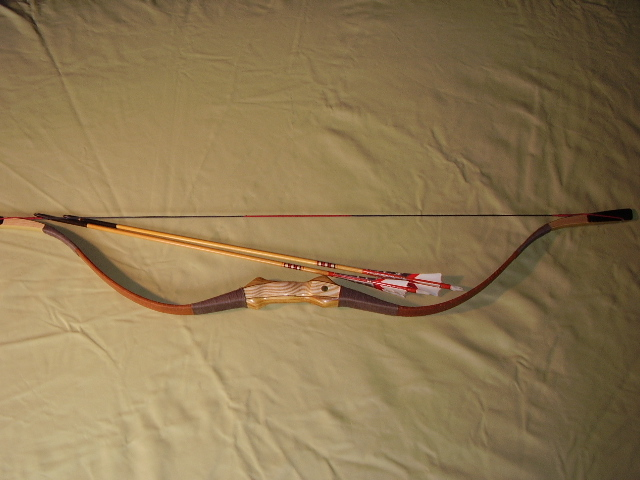
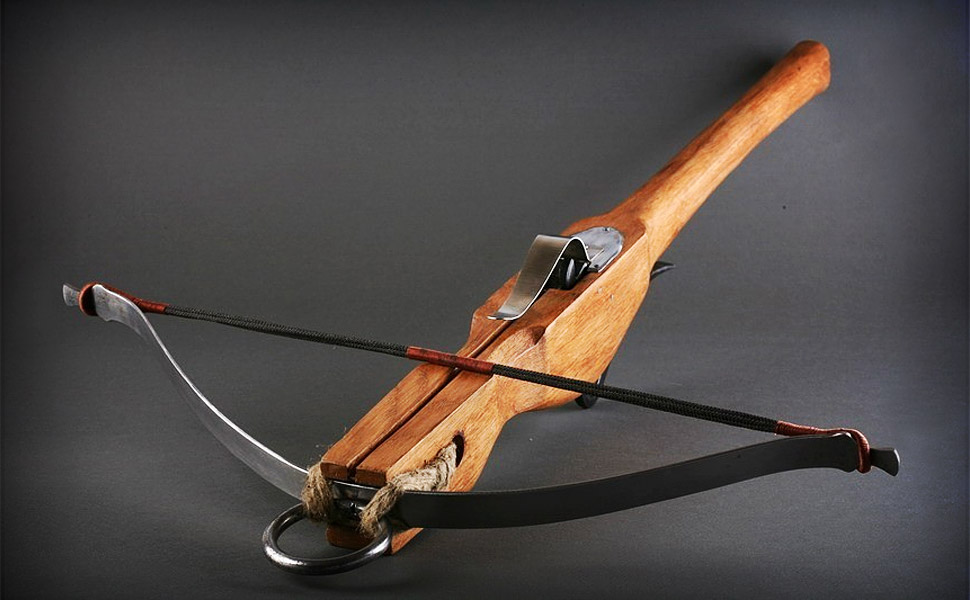
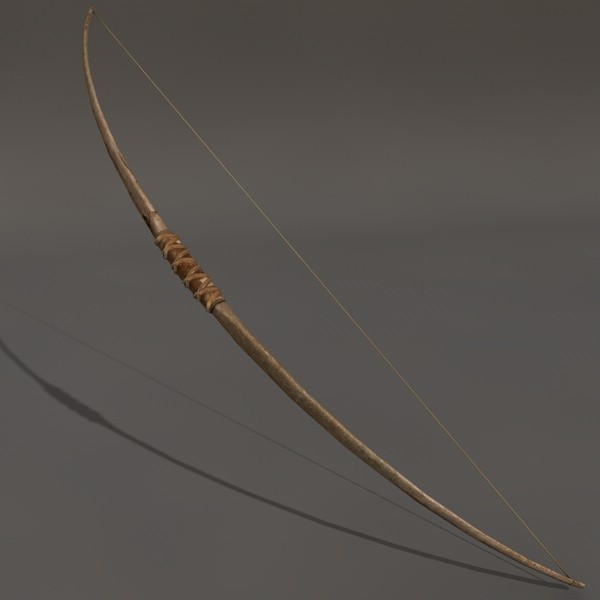
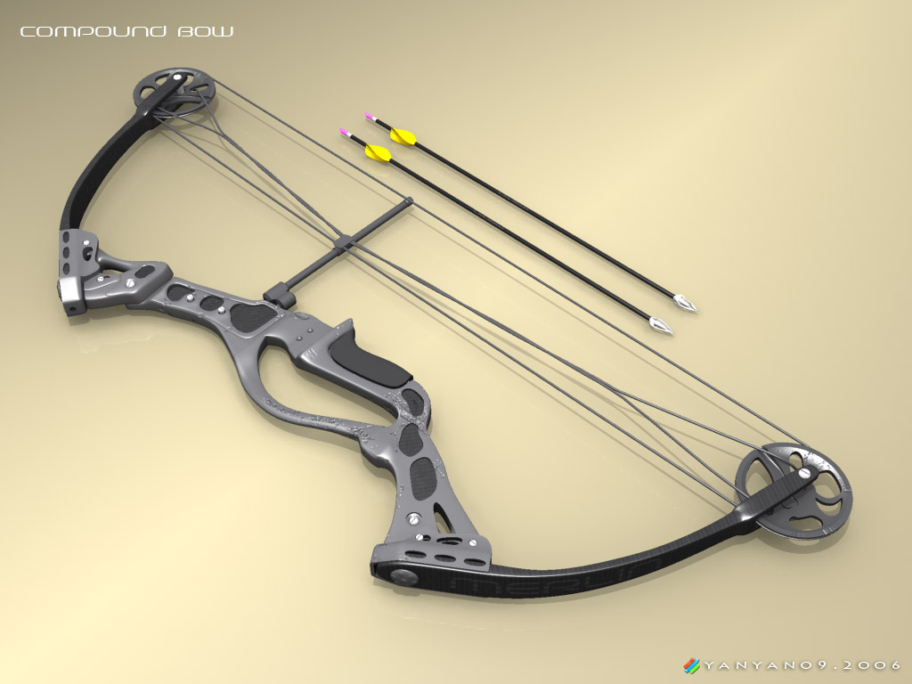

The Four Most Common Types of Bows:

Recurve Bow
A recurve bow is a bow with tips that curve away from the archer when the bow is strung. By definition, the difference between recurve and other bows is that the string touches a section of the limb when the bow is strung. A recurve bow stores more energy and delivers energy more efficiently than an equivalent straight-limbed bow, giving a greater amount of energy and speed to the arrow. A recurve will permit a shorter bow than the simple straight limb bow for a given arrow energy and this form was often preferred by archers in environments where long weapons could be cumbersome, such as in brush and forest terrain, or while on horseback.
Recurved limbs also put greater strain on the materials used to make the bow, and they may make more noise with the shot. Extreme recurves make the bow unstable when being strung. An unstrung recurve bow can have a confusing shape and many Native American weapons, when separated from their original owners and cultures, were incorrectly strung backwards and destroyed when attempts were made to shoot them.
Crossbow

A crossbow is a type of weapon, based on the bow, consisting of a horizontal bow-like assembly mounted on a stock, that shoots projectiles called bolts or quarrels. The medieval crossbow was called by many names, most of which derived from the word ballista, a torsion siege engine resembling a crossbow.
Historically, crossbows played a significant role in the warfare of East Asia, Europe and the Mediterranean. The invention of the crossbow caused a major shift in the role of ranged weaponry among armies, as the traditional bow and arrow had long been a specialized weapons system which required a considerable degree of lifetime training, physical strength and expertise to operate with any degree of efficiency; in many cultures, despite being usually drawn from the common class, bowmen were considered a separate and superior caste, as their archery skill-set (similar to many horseman cultures) was essentially developed from birth and impossible to reproduce outside a pre-established cultural tradition, which many nations lacked. In contrast, the crossbow was the first projectile weapon to be simple, cheap and physically-undemanding enough to be operated by large numbers of conscript soldiers, thus enabling virtually any nation with sufficient coin to field a potent force of ranged crossbowmen with little expense beyond the cost of the weapons themselves. This led to the ascendancy of large mercenary armies of crossbowmen (best exemplified by the Genoese crossbowmen), and the eventual death of the heavily armored aristocratic knight as armies became progressively dominated by conscripts equipped with increasingly-powerful ranged projectile weapons.

Longbow
A longbow is a type of bow that is tall—roughly equal to the height of the person who uses it; this will allow its user a fairly long draw, at least to the jaw. A longbow is not significantly recurved. Its limbs are relatively narrow so that they are circular or D-shaped in cross section. Flatbows can be just as long; the difference is that, in cross-section, a flatbow has limbs that are approximately rectangular.
Longbows have been made from many different woods by many cultures; in Europe they date from the Paleolithic, and since the Bronze Age were made mainly from yew, or from wych elm if yew was unavailable. The historical longbow was a self bow made of wood, but modern longbows may also be made from modern materials or by gluing different timbers together.
Organizations which run archery competitions have set out formal definitions for the various classes; many definitions of the longbow would exclude some medieval examples, materials, and techniques of use. According to the British Longbow Society, the English longbow is made so that its thickness is at least ⅝ (62.5%) of its width, as in Victorian longbows, and is widest at the handle. This differs from the Medieval longbow, which had a thickness between 33% and 75% of the width. Also, the Victorian longbow does not bend throughout the entire length, as does the medieval longbow. Longbows have been used for hunting and warfare, by many cultures around the world, a famous example being the English longbow, during the Middle Ages.
Compound Bow

A compound bow is a modern bow that uses a levering system, usually of cables and pulleys, to bend the limbs.
The limbs of a compound bow are much stiffer than those of a recurve bow or longbow. This limb stiffness makes the compound bow more energy-efficient than other bows, in conjunction with the pulley/cams. The compound bow has its string applied to pulleys (cams), and one or both of the pulleys have one or more cables attached to the opposite limb. When the string is drawn back, the string causes the pulleys to turn. When the draw commences, the archer has reduced mechanical advantage, but during the draw, as the pulley cams rotate, the (limb plus cam radius) distance gets longer, and the archer gains mechanical advantage over the bending limbs, and less force is needed to bend the limbs more, in comparison to other bows.
The use of this levering system gives the compound bow a characteristic draw-force curve which rises to a peak weight and then "lets off" to a lower holding weight, allowing the shooter to hold the string at full draw for much longer when compared to recurve bows. This is because recurves don't "let off", meaning that the full weight (force) of the draw must be maintained by the user. A compound bow moves a lot of the weight away from the draw string (hand), allowing for longer, more accurate and far less strenuous aiming, especially when shooting several times in a row.
The compound bow is little affected by changes in temperature and humidity and this gives it superior accuracy, velocity, and distance compared to other bows. The compound bow was first developed in 1966 by Holless Wilbur Allen in Missouri, and a US patent was granted in 1969. The compound bow has become increasingly popular. In the United States, the compound is the dominant form of bow.
| Bow Type Facts |
|
Time Invented |
Effective Range |
Power Rank |
Size |
| Recurve |
800 BC |
60 yds |
4 |
50" x 12" |
| Crossbow |
500 BC |
100 yds |
2 |
20" x 36" |
| Longbow |
1000 AD |
150 yds |
3 |
72" x 12" |
| Compound |
1966 BC |
150 yds |
1 |
30" x 10" |